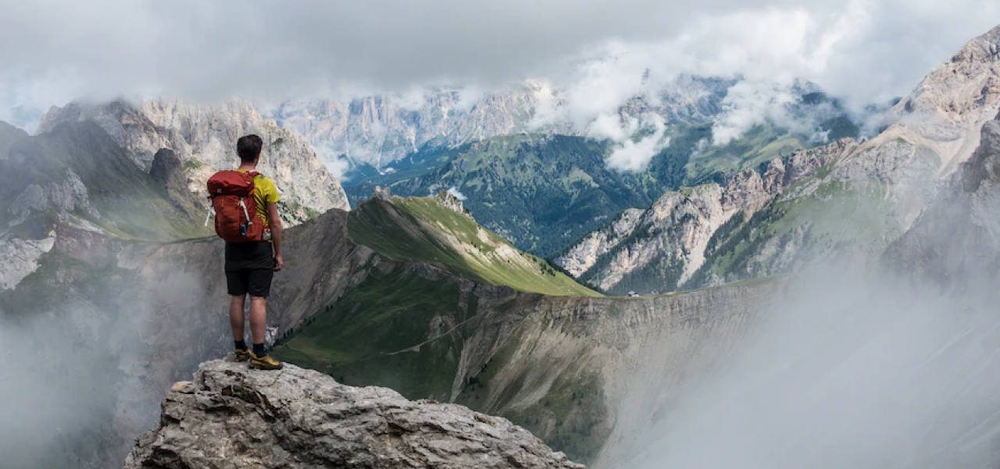

Apakah jejak memanggil? Berikut adalah 11 cara luar biasa hiking dapat mengubah pikiran dan tubuh Anda.
Saya akan mulai dengan membagikan beberapa manfaat hiking untuk kesehatan fisik Anda. Sementara beberapa manfaat fisik mungkin sudah jelas – seperti potensi penurunan berat badan – hiking memiliki beberapa manfaat kesehatan yang mengejutkan.
Mendaki itu baik untuk jantung
Hiking sangat bagus untuk kesehatan jantung. Bahkan hiking ringan dapat meningkatkan detak jantung ke tingkat sedang yang membantu meningkatkan kebugaran dan daya tahan aerobik. Seiring waktu, tubuh Anda menyesuaikan diri dengan tingkat kebugaran baru dan Anda dapat mendaki lebih lama, lebih cepat, dan lebih keras tanpa merasa lelah atau kehabisan napas. Hiking juga dapat meningkatkan penanda yang terkait dengan kesehatan jantung seperti tekanan darah, kadar gula darah, dan kolesterol. Penelitian telah menunjukkan bahwa melakukan pendakian sedang secara teratur dapat secara signifikan mengurangi hipertensi, meningkatkan toleransi glukosa, dan menurunkan kadar kolesterol 'jahat' dari waktu ke waktu.
Hiking dapat meningkatkan kepadatan tulang
Kepadatan tulang mengacu pada jumlah mineral tulang di tulang Anda. Kepadatan tulang yang tinggi penting untuk mencegah patah tulang dan mengurangi risiko osteoporosis. Aktivitas berdampak tinggi dan menahan beban seperti hiking membantu meningkatkan kepadatan tulang dengan memperkuat jaringan tulang.
 7 Spot Hiking yang Menakjubkan untuk Petualangan di Alam Terbuka
7 Spot Hiking yang Menakjubkan untuk Petualangan di Alam Terbuka
 Eksplorasi Alam Terbuka di Taman Nasional Yellowstone
Eksplorasi Alam Terbuka di Taman Nasional Yellowstone